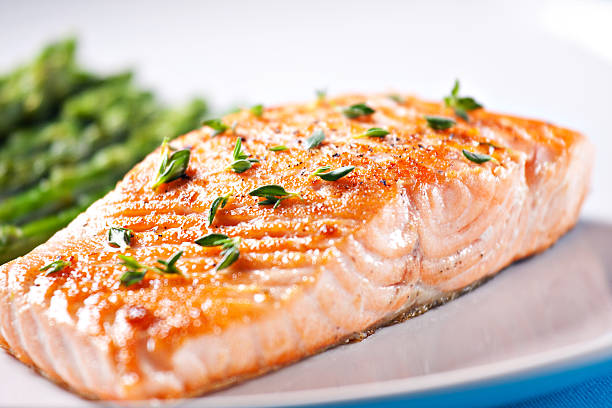

Baked Salmon Recipe

It doesn’t get much easier than this Easy 5 Ingredient Baked Salmon recipe with a garlic, lemon, and dill butter sauce. All it takes is 5 ingredients and 20 minutes of your time. So simple, so flavorful!
Ingredients
- 1 salmon filet
- 1/2 cup salted butter melted
- 4 tablespoons fresh lemon juice
- 8 garlic cloves crushed
- 2 tablespoons finely chopped fresh dill
Steps
- Preheat oven to 375 degrees. Line a 4 sided baking sheet with aluminum foil. Place the salmon in the middle of the foil.
- In a glass measuring cup, combine melted butter, lemon juice, garlic, and dill. Whisk together.
- Pour butter mixture directly over salmon. Pull the sides and ends of the aluminum foil up and pinch together, covering the salmon completely.
- Bake in the preheated oven for 15-20 minutes, or until the salmon flakes easily with a fork.